XDAQ ONE+
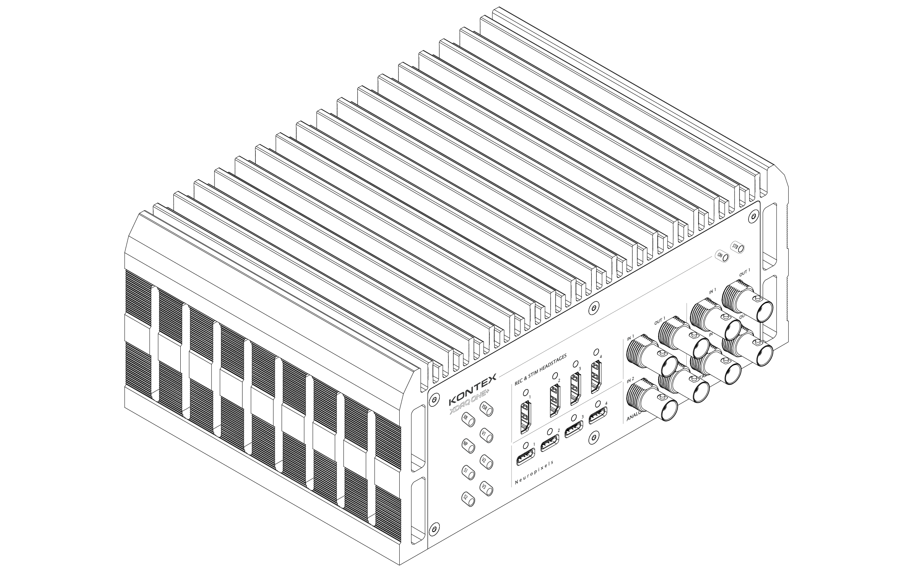
Overview
The XDAQ™ product line offers a suite of acquisition solutions designed to address the evolving needs of modern neuroscience research. These systems combine flexibility and performance, enabling integrated, multimodal approaches to a wide range of experimental techniques.
The ONE+ model is a uniquely versatile platform that unifies multiple capabilities into a single device. It supports up to 1024 channels of high-resolution spike recordings and, in XSR mode, provides up to 128 channels that can be dynamically configured for recording or stimulation. Additionally, the system includes native support for advanced electrode technologies, such as Neuropixels probes, with the capacity to operate up to four probes simultaneously.
With comprehensive onboard and expandable input/output (I/O) capabilities, the XDAQ™ seamlessly integrates with standard laboratory equipments, ensuring compatibility across diverse experimental setups.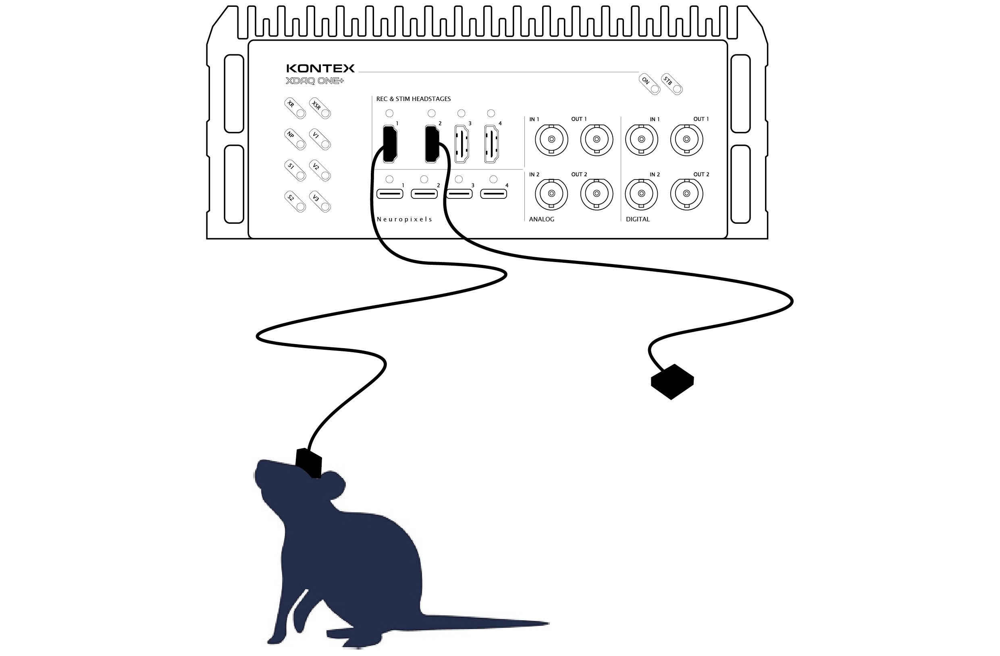
Components
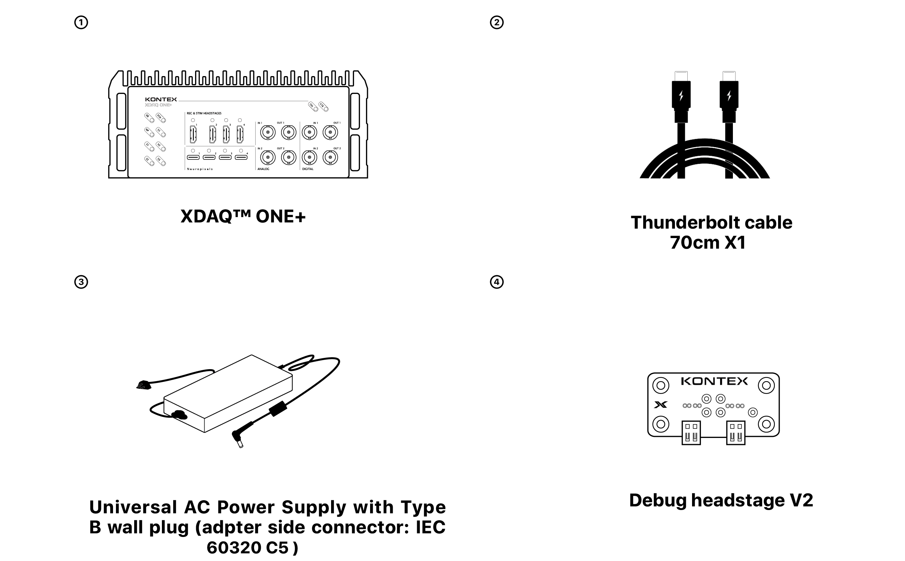
Dimension And Weights
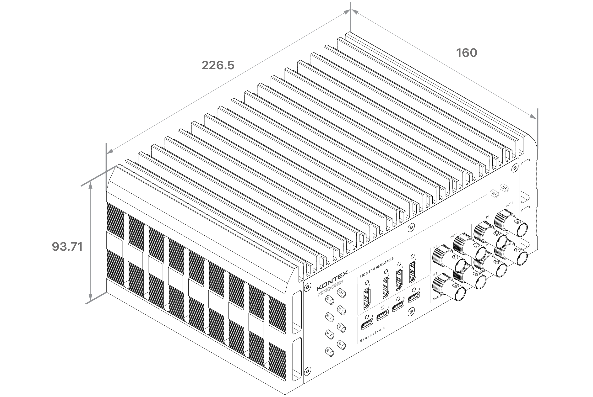
Weight 2810g
unit: mm
Device Overview
The ONE+ Front Panel
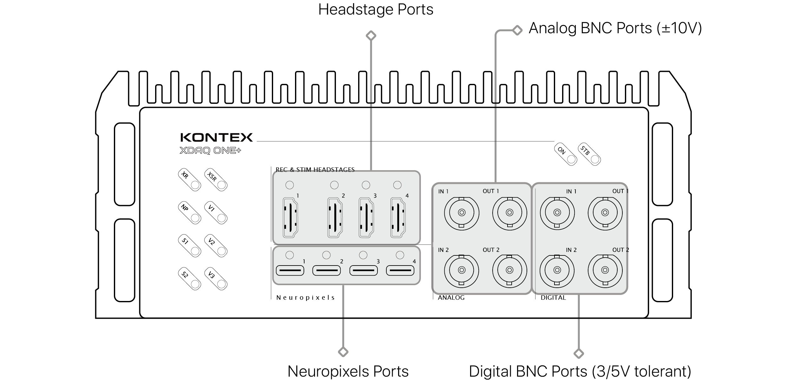
The ONE+ Back Panel
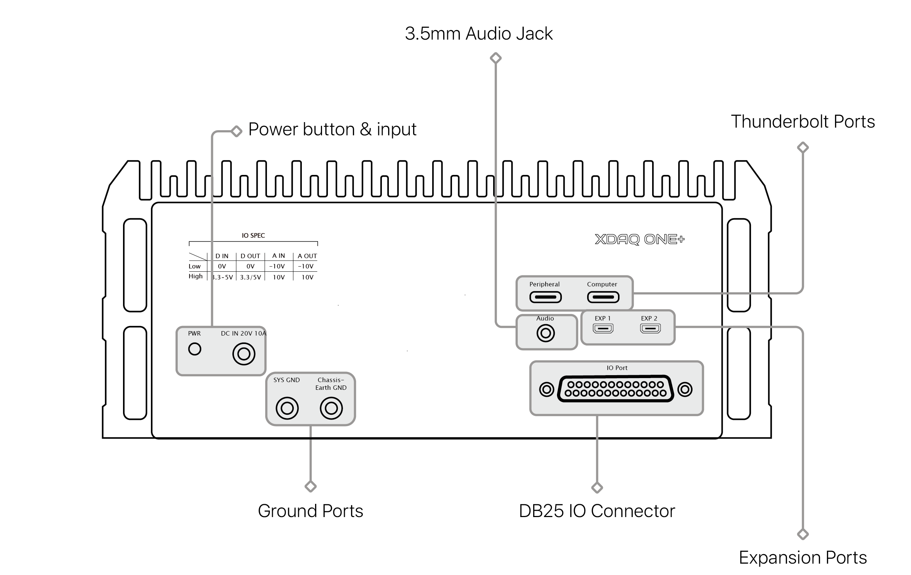
System LED Indicators
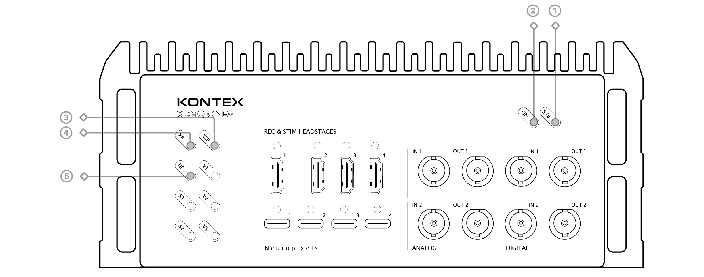
③ XR LED:
[ ON ] Indicates that the XDAQ™ is in XR (Recording only) mode and ready to use.
[Flashing] Indicates that the XDAQ™ acquisition in progress.
④ XSR LED:
[ ON ] Indicates that the XDAQ™ is in XSR (Stim-Record) mode and ready to use.
[Flashing] Indicates that the XDAQ™ acquisition in progress.
⑤ NP LED: Indicates that the XDAQ™ is in NP (Neuropixels) mode and ready to use.
V1 [ ON ] VStim level set to +/- 7V
V2 [ ON ] VStim level set to +10/-4V
V3 [ ON ] VStim level set to +4/-10V
S1 [ ON ] Digital output channels DO-01 and DO-02 are set to 5V logic high.
[ OFF ] Digital output channels DO-01 and DO-02 are set to 3.3V logic high.
S2 [Flashing] XR, XSR Modes: Activity in Digital IN or OUT channel (ch1-32)
Headstage LED Indicators
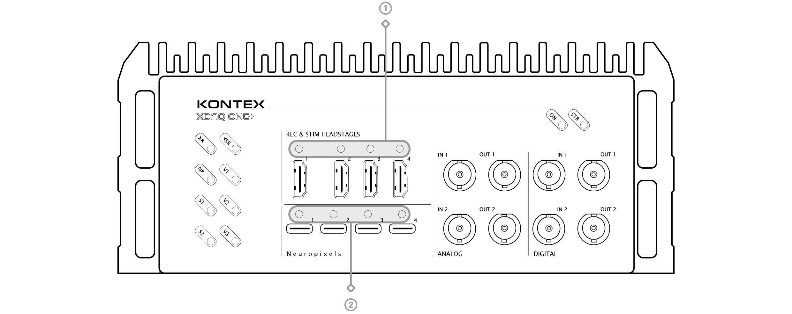
② Neuropixels Port LED 1 - 4:
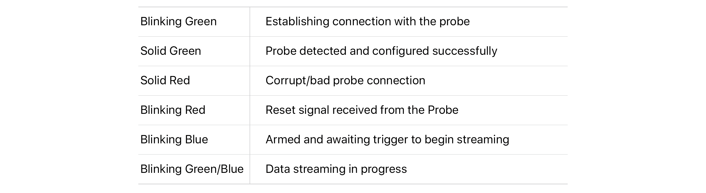
Setting Up The XDAQ™
Turning on the XDAQ™
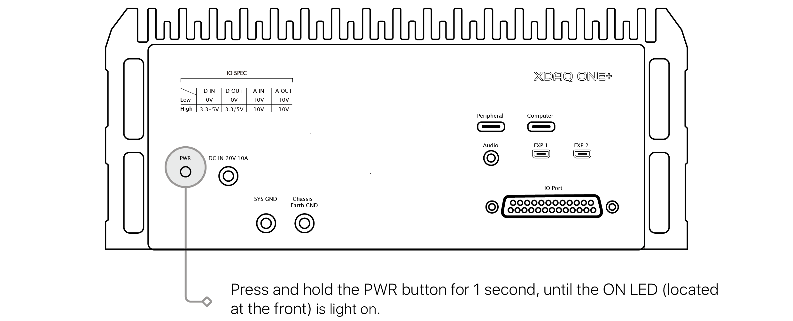
Turning off the XDAQ™
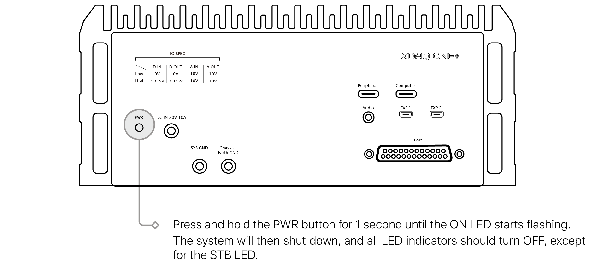
Setting Up The IO Ports
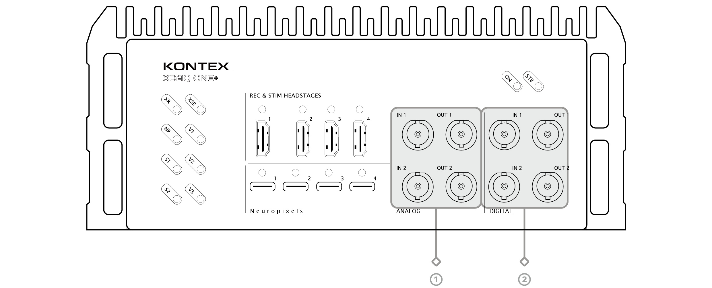
ONE+ features two pairs of wide range (±10V), general purpose 16-bit ADC (AI-01, AI-02) and DAC (AO-01, AO-02) channels, each equipped with a BNC connector for easy access. These ports operate on the same sample rate as the X-Headstage™ (XR, XSR Mode). In NP mode, the sample rate is fixed at 30kHz.
② Digital BNC Ports
ONE+ features two pairs of digital input (DI-01, DI-02) and output (DO-01, DO-02) channels, each equipped with a BNC connector. The digital inputs support both 3.3V and 5V digital signals. The signal level for the BNC digital output ports can be configured via software to either 3.3V or 5V logic high. The digital I/Os operate at the same sample rate as the X-Headstage™ (XR, XSR mode). In NP mode, the sample rate is fixed at 30 kHz.
⚠ IMPORTANT: Do not connect ports to unintended signal type. Permanet damage may occour.
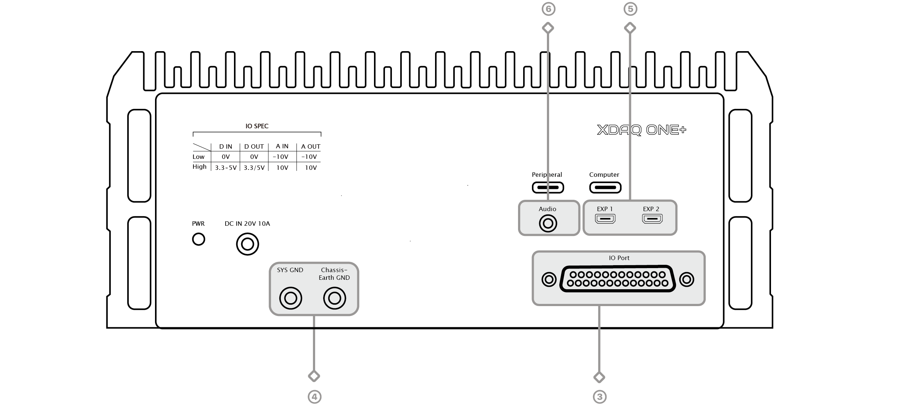
The DB25 connector provides six additional pairs of digital I/O channels. The digital inputs on the DB25 connector (DI-03 to DI-08) are compatible with both 3.3V and 5V digital signals. The digital outputs on the DB25 connector (DO-03 to DO-08) are designed for 3.3V logic high. The digital I/Os operate at the same sample rate as the X-Headstage™ (XR, XSR mode). The connector also includes supplementary device signals for interfacing with external devices.
④ Ground Ports
Sys GND — the digital ground shared by the internal electronic circuitry.
Chassis GND — connected to the metal enclosure, the outer shield of the HDMI cable, and earth ground via the power supply.
As a starting point, we recommend bonding the two ground ports together and using this common node to ground the Faraday cage shielding. Since environmental conditions can vary significantly, users should test and adjust the grounding configuration to determine the most effective setup for their specific environment.
⑤ Expansion Ports
The EXP1 and EXP2 ports connect to XDAQ™ accessories, such as the I/O Expander, to provide additional digital and analog I/O functionality.
⑥ 3.5mm Audio Port
This 3.5mm stereo jack enables audio monitoring of two selected headstage amplifier channels, configured via software: Analog Out 1 (AO-01), which is routed to the left audio channel, and Analog Out 2 (AO-02), which is routed to the right audio channel.
⚠ IMPORTANT: Do not connect ports to unintended signal type. Permanet damage may occour.
Setting Up The Headstage And Probe
For Record-Only (XR) or Stim-Record (XSR) Experiments
- Connect the Type-D micro-HDMI connector of the stock KonteX HDMI cable to the X-Headstage™.
- Connect the Type-A HDMI connector to one of the XDAQ™ Headstage Ports. Always use Port 1, as other ports may be unavailable depending on the license purchased with the XDAQ™.
- Optionally, a commutator can be used between the headstage and the XDAQ™ Headstage Ports.
- Plug the electrode into the headstage.
For Neuropixels Experiments (NP Mode)
- Connect the Omnetics connector of the Neuropixels cable to the headstage.
- Connect the USB-C connector of the cable to one of the Neuropixels Ports (Port 1–4).
- Optionally, a commutator can be used between the Neuropixels headstage and the XDAQ™. Refer to the Commutator User Manual for more information.
- Insert the Neuropixels probe into the headstage by connecting the flex cable of the Neuropixels probe to the headstage. Note: The metal pads on the flex cable should face downward when inserting it into the headstage. Flip the flex cable connector down to lock the probe in place.
Installing Driver & Software
1. Connecting to a PC
Use the supplied Thunderbolt cable to connect the Computer Port on the XDAQ™ to a Thunderbolt port on the PC. The cable is identifiable by the lightning bolt symbol on its connector.The XDAQ™ can also supply power to the connected computer: CORE2 can deliver up to 15 W, sufficient to power most laptops. The Peripheral Port supplies up to 15 W of power.
The Peripheral Port can also be used to connect a Thunderbolt accessory, such as a storage device, which will be accessible from the host PC.
2. Download the driver
- Windows: https://developer.kontex.io
- macOS: Search for XDAQ™ from the App Store
- Linux: Contact us
3. Install the driver
Windows
1. Before installation, ensure that a "PCI Simple Communications Controller" is listed in the Device Manager.
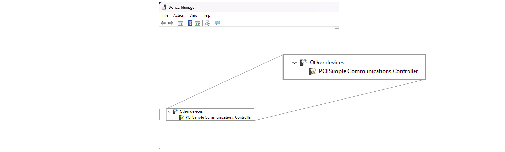
3. Locate "XDAQ.inf", right-click on it, and select “Install.”
4. Once the driver is successfully installed, this entry will update to "KonteX XDAQ".
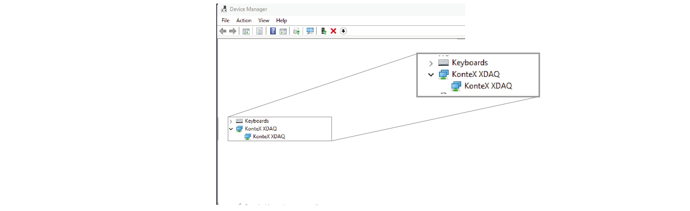
MacOS
1. Go to App Store, search for "XDAQ" and install "KONTEX XDAQ" app.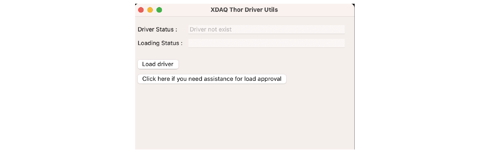
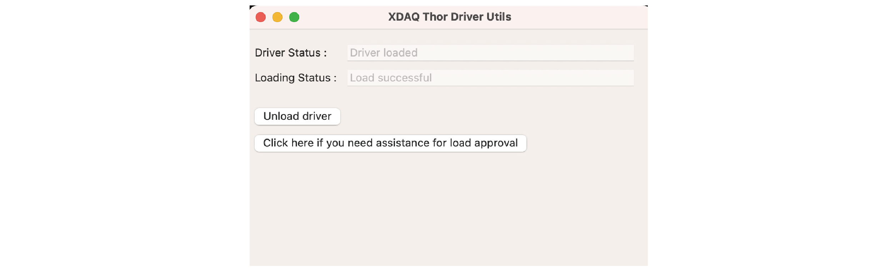
4. Download the software
XDAQ can run on popular open source applications. Download the latest from our website. Note that not all applications supports all experiment modes.XR Headstages (XR Mode): Open-Ephys ("Install XDAQ Plugin") or XDAQ-RHX
XSR Headstages (XSR Mode): XDAQ-RHX
Neuropixels (NP Mode): Open-Ephys ("Install XDAQ Neuropixels Plugin")
Verify Device Connection
Once the PC is connected and the XDAQ™ is powered on, it should be automatically recognized by the operating system. For additional details, refer to the Install the Driver section.⚠ IMPORTANT : A USB-C data cable cannot substitute for the supplied Thunderbolt cable when connecting to the PC.
PRO TIP : The XDAQ™ is compatible with Thunderbolt cables up to 3 meters in length. If stock Thunderbolt cable will not be used, be sure to select an Intel/Apple-certified cable (identified by a lightning bolt symbol) that complies with Thunderbolt 3 or higher specification.
Updating The Firmware
KonteX may occationally release new firmwares for bug fixes and new functionalities. Additional capabilities may be enabled if they were not selected in the initial purchase (e.g. adding the SR128 capability or Neuropixels support).
Check KonteX website (https://developer.kontex.io) for firmware update tool. Follow the prompt from the application to proceed.
When XDAQ™ is up to date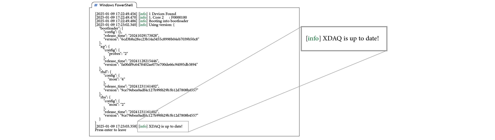
Upgrading XDAQ™
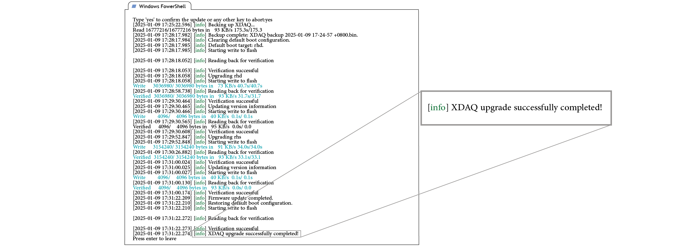
When XDAQ™ is not connected
Starting The Application
Check your firmware version before launching the application
Before launching the application, please update the system firmware to the latest version.Systems with the default “0-0-0” configuration will not be recognized properly by the software until the firmware update is completed.
Please refer to the Firmware Update section in this manual for detailed instructions before proceeding with any recording or stimulation experiments.
Run the record-only experiment (XR Mode)
- Connect the XR headstage (X3R, X6R, or XeR) to the system using the KonteX HDMI cable.
- Launch a compatible application, such as Open-Ephys or XDAQ-RHX, downloaded from the KonteX website.
- If the XR Mode LED is not illuminated (indicating that the XR firmware is not loaded), the system will automatically boot into XR Mode when prompted by the software. This process may take a few minutes, after which the XR Mode LED should turn on.
- Once the application launches, it should detect the headstage and display the number of available channels.
- If the software does not detect the headstage, ensure that an XR-type headstage is correctly connected and securely attached. Restart the application or rescan the ports.
Run the stimulation-recording experiment (XSR Mode)
- Connect the XSR headstage (X3SR or XeSR) to the system using the KonteX HDMI cable.
- Launch a compatible application, such as Open-Ephys or XDAQ-RHX, downloaded from the KonteX website.
- If the XR Mode LED is not illuminated (indicating that the XR firmware is not loaded), the system will automatically boot into XR Mode when prompted by the software. This process may take a few minutes, after which the XR Mode LED should turn on.
- Once the application launches, it should detect the headstage and display the number of available channels.
- If the software does not detect the headstage, ensure that an XR-type headstage is correctly connected and securely attached. Restart the application or rescan the ports.
⚠ IMPORTANT : Using non-KonteX HDMI cables is possible but not recommended. Many commercial cables contain active electronics that can interfere with XDAQ™ communication and potentially damage the XDAQ™ system or the X-Headstage™.
Run the Neuropixels experiment (NP Mode)
- Connect the Neuropixels probe and headstage to the XDAQ™.
- Copy the Neuropixels calibration data provided by IMEC into "OpenEphys/Calibrationinfo" folder.
- Launch the compatible application (OpenEphys XDAQ™ Neuropixels plugin, currently the only compatible open-source application) downloaded from the KonteX website.
- If the NP Mode LED is not illuminated (indicating that the Neuropixels firmware is not loaded), the system will automatically boot into NP Mode when prompted by the software. This process may take a few minutes, after which the NP Mode LED should turn on.
- Once the application starts, the software will automatically scan for installed probes and upload the corresponding calibration data. The XDAQ™ Neuropixels plugin GUI will display a green dot, indicating that the system is ready to begin streaming data.
- During data streaming, the Neuropixels Port LED will flash green and blue.
- If the PC experiences difficulty keeping up with the data transfer, the S2 LED will flash.
⚠ IMPORTANT : Currently, it is not possible to use Probes/Headstages from different modes simultaneously (e.g. X3SR32 and X6R128 headstages simultaneously or X3SR32 headstage/probe with the Neuropixels).
PC Requirement
Reference PC configuration
Apple Mac Mini M4 PRO 16GBMSI Cubi Series with i7 or above
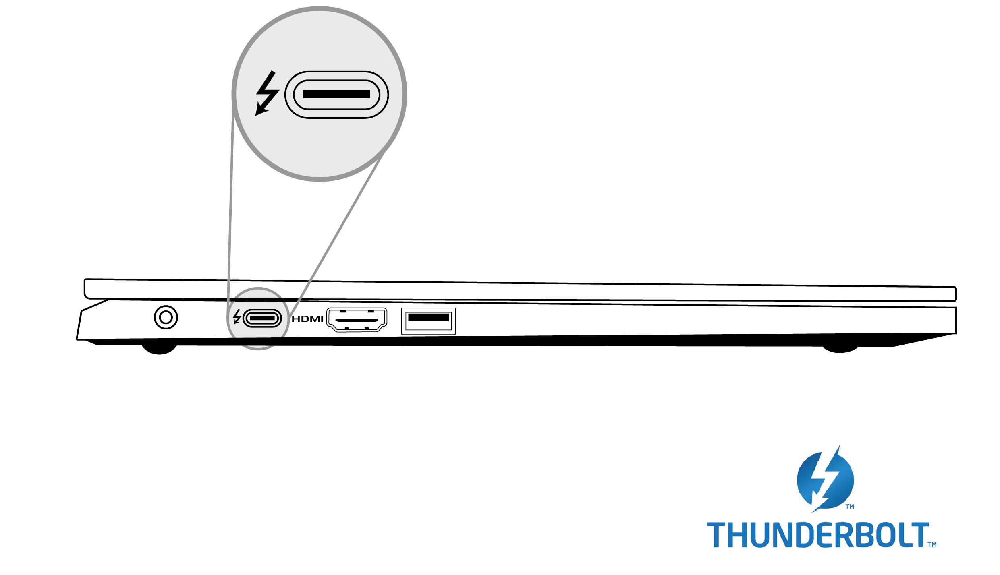
⚠ IMPORTANT: While Thunderbolt and USB-C share the same physical connector, they are not interchangeable. Thunderbolt offers significantly higher data transfer rates and requires specific compatible cables. Retrofitting a PC with a Thunderbolt add-on card is generally impractical, as these cards are model-specific and often incompatible with other systems. To prevent compatibility issues, users should verify that their PC includes native Thunderbolt support.
XDAQ™ DB25 IO Connector Pinout
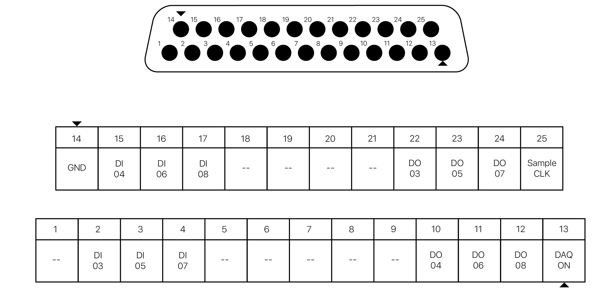
Sample CLK: is the sampling clock used to drive the X-Headstage™
All digital inputs (DI-01 to DI-08) are compatible with both 3.3V and 5V digital signals. The BNC digital output ports (DO-01, DO-02) can be configured via software to output either a 3.3V or 5V logic high signal. The digital output channels on the DB25 connector (DO-03 to DO-08) are designed for 3.3V logic high output.
Accessory
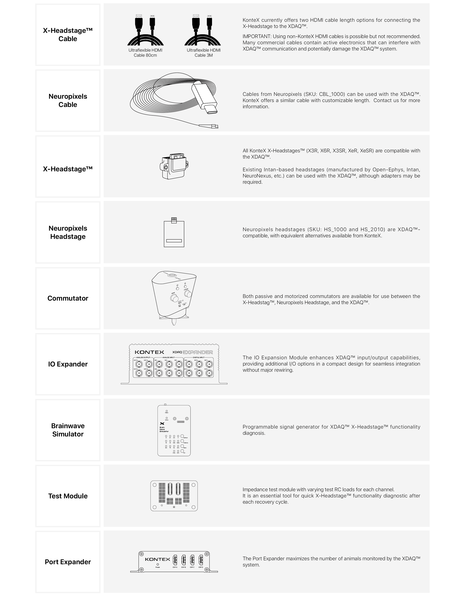
Technical Specifications - ONE+
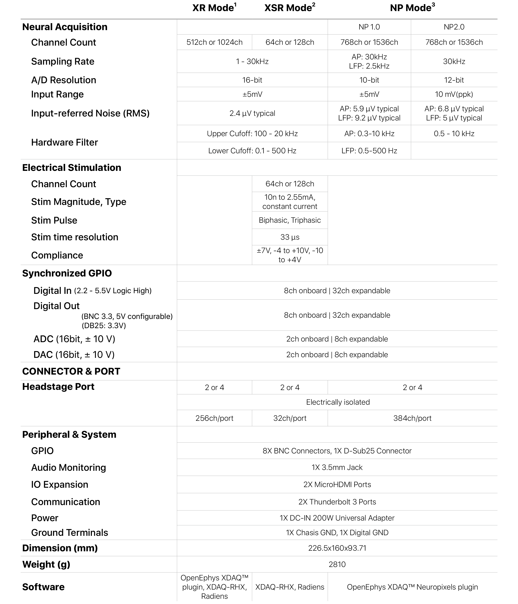
1. XR mode acquisition specifications are based on Intan Technologies’ RHD2000 series IC. In case of any discrepancies, the manufacturer's specifications shall take precedence.
2. The acquisition and stimulation specifications for XSR Mode are based on Intan Technologies' RHS2000 series IC. In case of any discrepancies, the manufacturer's specifications shall take precedence.
3. NP mode acquisition specifications are derived from IMEC’s Neuropixels 1.0 and 2.0 electrode. In case of any discrepancies, the manufacturer's specifications shall take precedence.
Model Comparison
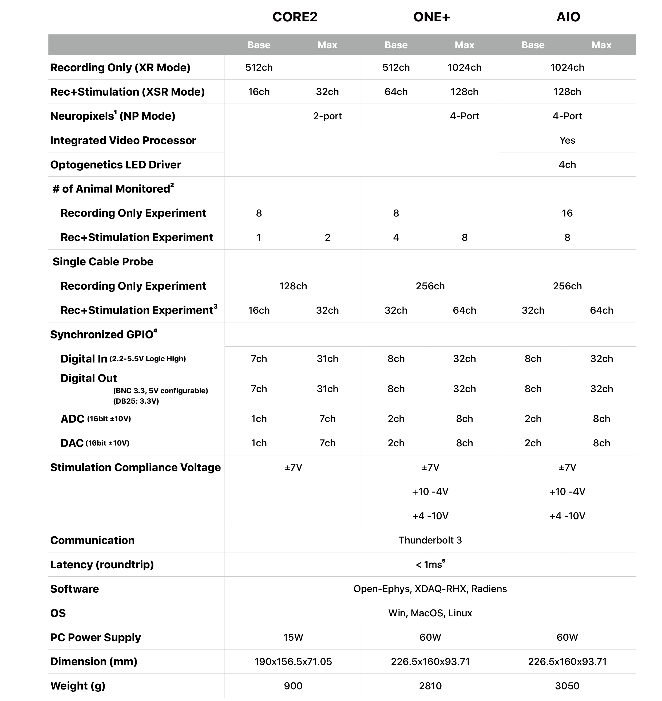
1. Neuropixel support (NP Mode) can be configured without the XR Mode or XSR Mode for passive probes.
2. Number of animals monitored can be increased using Port Expander, which provide each animal monitored with independent and isolated ground circuit.
3. Adpt-SR64 adapter is required to drive 64ch X3SR64 headstage.
4. IO Expander is required to increase the IO support.
5. Latency may vary with OS.